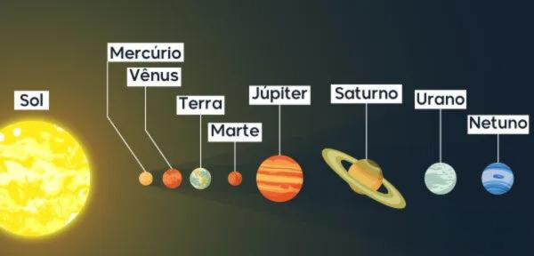

O que é o Sistema Solar?
O Sistema Solar é um conjunto formado por oito planetas e outros corpos celestes, que orbitam o Sol, a sua principal estrela. Está localizado na Via Láctea, uma das galáxias que formam o Universo.
A estrela central, maior componente do sistema, respondendo por mais
de 99,85% da massa total, gera sua energia através da fusão de hidrogênio em hélio, dois de seus principais constituintes.
O Sistema é formado por 8 planetas, sendo em ordem:
- Mercúrio
- Vênus
- Terra
- Marte
- Júpiter
- Saturno
- Urano
- Netuno
Qual a idade do Sistema Solar?
Tem uma idade de 4,571 x 10^9 anos, aproximadamente 4,7 bilhões de anos
Qual o tamanho do Sistema Solar?
Tem um tamanho de 8,75 trilhões de quilômetros.
Os planetas podem ser classificados em:
Rochosos: são os quatro planetas mais próximos do Sol: Mercúrio, Vênus, Terra e Marte. São caracterizados por serem constituídos
de rochas, ferro e metais pesados e por possuírem maior densidade, visto que os materiais densos possuem tendência a estarem mais
próximos ao Sol.
Gasosos:são os quatro planetas mais distantes do Sol: Júpiter, Saturno, Urano e Netuno. São maiores que os planetas Rochosos
em termos de dimensão. São caracterizados por serem formados por gases como hélio e hidrogênio. São menos densos, por isso mais afastados
do Sol. Há evidências de que esses planetas possuem um núcleo rochoso, contudo, não apresentam uma superfície definida.
Todos apresentam vários satélites naturais e sistemas de anéis.
Qual a origem do Sistema Solar?
Sua origem ainda é questionada, visto que não há uma teoria que satisfaça inteiramente todas as questões que perpassam a
formação do Sol e dos planetas. Entretanto, atualmente, há uma teoria mais aceita entre a comunidade científica e astronômica: a
teoria da nebulosa solar.
Essa teoria foi formulada inicialmente por René Descartes no ano de 1644, sendo reformulada por Immanuel Kant em 1775 e, depois,
por Pierre-Simon de Laplace em 1796. A teoria formulada por Laplace supunha hipoteticamente que o Sol formou-se a partir da rotação
de uma nuvem que ao se contrair com influência da gravidade, aumentou sua velocidade entrando, então, em colapso. Assim, o Sol
formou-se devido à concentração central da nebulosa e os planetas formaram-se a partir dos remanescentes da nuvem molecular em
colapso.
Essa teoria foi aperfeiçoada, continuando baseada no fato de o Sol e os planetas terem sido formados quase simultaneamente.
Para a teoria, o Sol teve sua formação no centro da nebulosa. Os planetas que se formaram nas regiões mais externas, onde a
temperatura é menor e as substâncias voláteis, condensaram-se.
Já os planetas formados em regiões mais internas, onde a temperatura é maior e as substâncias mais voláteis, perderam-se.
Essa circunstância explica a classificação dos planetas em gasosos e rochosos.